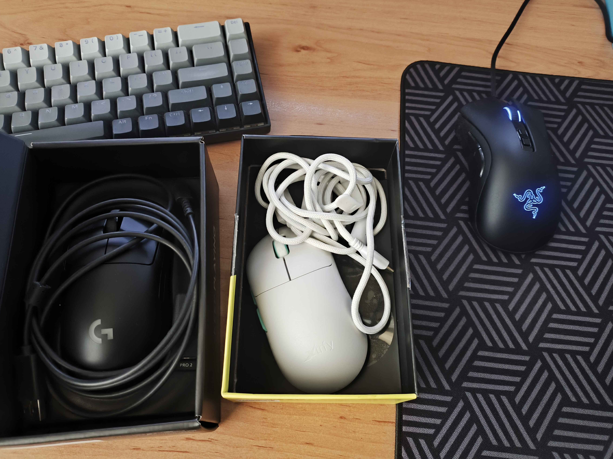
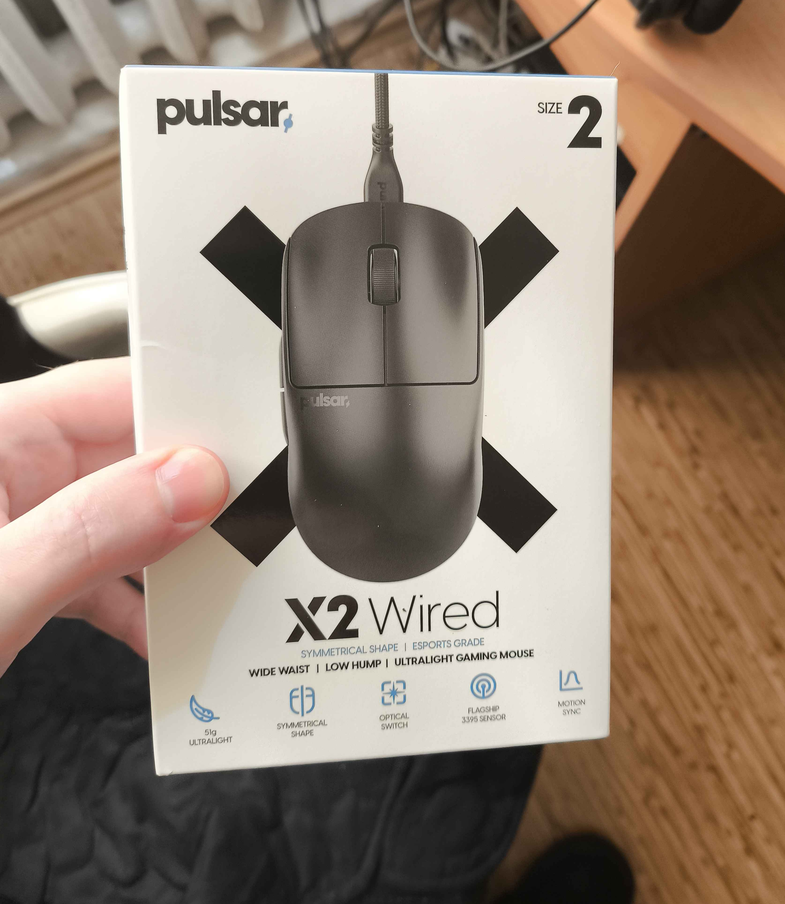

Мне за 30, и за моими плечами более 18 лет в соревновательных шутерах. Это не просто хобби — это уровень восприятия, где ты чувствуешь микро-задержки в единицы миллисекунд.
«Мой пиковый ранг в Valorant — Immortal 3 (400 RR). Даже сейчас, когда я борюсь с проблемами электросети и инпут лагом, мой ранг не опускается ниже Immortal. Именно этот опыт позволяет мне с уверенностью говорить: когда сенсор начинает "плавать", это не плохой день у игрока, это техническая преграда».
Мой текущий сетап
CPU: Ryzen 7 5700X3D
MB: ASUS TUF Gaming B450-PLUS II
RAM: DDR4 Viper 3200MHz (8GB x2)
GPU: GTX 1660
Ловушка апгрейда: Aerocool vs MSI
Раньше у меня стоял блок Aerocool VP-650. С ним инпут лаг был, но статика не проявлялась. Решив улучшить питание, я перешел на современный MSI MAG A750GL PCIE5 (750W). Казалось бы, топовый блок должен решить проблемы, но всё стало только хуже.
«Спустя неделю после замены БП меня начало бить током. При касании железного микрофона палец отчетливо щипает. Это верный признак: новый блок агрессивно фильтрует помехи, но без заземления в розетке этот мусор сбрасывается на корпус и USB-порты».
Поведение мышек в "грязной" сети
Влияние на сенсоры оказалось катастрофическим. Особенно это заметно на современных беспроводных моделях, где сенсор начинает "плавать" и вести себя хаотично. Чтобы не быть голословным, вот мой текущий тестовый арсенал:

Мой Сетап

Pulsar X2 Medium wired
Замена Проводки в процессе
RAWM ER21PRO: Худший результат. Мышки вели себя настолько нестабильно, что сенсор срывало хаотично. RAWM я даже сдал по гарантии (вернули деньги), так как играть было невозможно.
Pulsar X2 Medium (проводная): Даже на проводе проблема не ушла — сенсор как будто не слушается руки, нет ощущения прямого контроля. возможно из за того что ее сделали более легкой и пожертвовали нормальным экранированием
Xtrfy m8 и Logitech G PRO 2: Эффект плавания есть, хотя он чуть менее заметен, чем на других моделях.
Razer DeathAdder V2 (проводная): Единственная мышь, на которой играть терпимо. Вероятно, её старая начинка и кабель экранированы лучше, чем у современных "облегченных" девайсов.
Этот опыт еще раз доказывает: если у вас нет заземления, покупка мощного блока питания может превратить ваш ПК в источник помех, которые убивают точность сенсора и регистрацию попаданий.
 Замена Проводки в процессе
Замена Проводки в процессе